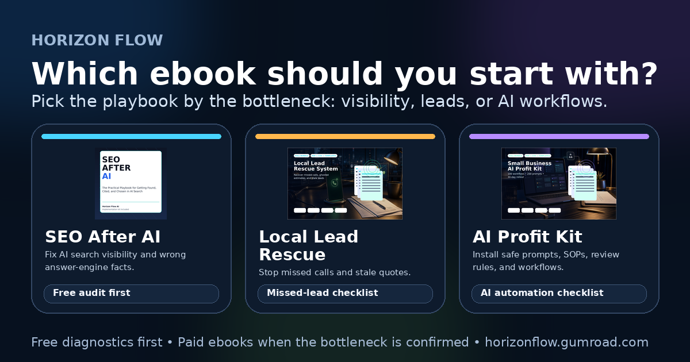

{kind=link}
If you want practical AI automations
Start with the free AI workflow checklist, then use the 30-day tracker if you want to test adoption over a month.
Resource decision guide
Use this guide to choose between SEO After AI, the Local Lead Rescue System, and the Small Business AI Profit Kit based on the bottleneck you want to fix first.
Start with the free resourcesVisual chooser
This comparison card gives a quick, non-hype way to explain which Horizon Flow ebook fits each bottleneck. It supports the no-sales conversion signal without changing pricing, buyer files, or marketplace settings.

Download the square social version for profile feeds or carousel-style posts.
Start here first
Before buying anything, run one free diagnostic. It keeps the decision grounded in the problem you actually have this week.
Start with the free AI workflow checklist, then use the 30-day tracker if you want to test adoption over a month.
Start with the missed-lead checklist, then use the speed-to-lead swipe file to improve the first reply.
Start with the AI search visibility audit and answer-gap worksheets before buying SEO After AI.
Request optional updates and keep using the free resources until the bottleneck is obvious. Free resources stay available without subscribing.
Decision matrix
If/then rules
Start-here paths
Use the AI search visibility audit and answer-gap log, then choose SEO After AI if you need a complete playbook for proof, schema, source clarity, and AI-search-safe pages.
Use the AI automation checklist, run the 30-day tracker, then choose the Small Business AI Profit Kit if you want the full prompt-and-workflow system.
Use the missed-lead checklist, install speed-to-lead replies, then choose Local Lead Rescue System for the full follow-up playbook.
Use SEO After AI to improve discovery and source clarity, Local Lead Rescue System to protect the inquiry, then the Small Business AI Profit Kit to standardize drafts, SOPs, reviews, and handoffs.
Paid options after the free diagnostics
Use the paid ebook that matches the bottleneck you confirmed with the free resources above. All three are currently $19.99 on Gumroad.
Best for owners, marketers, and consultants who need AI search visibility, source-of-truth checklists, schema/FAQ/page guidance, and proof-safe answer-engine optimization.
View SEO After AI on GumroadBest for owners who want AI prompts, workflow selectors, worksheets, human review rules, and a practical rollout plan.
View the AI Profit Kit on GumroadBest for local service teams that need faster lead response, missed-call recovery, follow-up scripts, intake labels, and simple tracking.
View Local Lead Rescue on GumroadCombo recommendation
If your business depends on booked calls, estimates, appointments, or jobs, the best combo is usually:
This order protects near-term revenue before expanding into broader productivity gains.
Optional updates: Want new Horizon Flow checklists and implementation examples?
Free resources stay available without subscribing. No phone, payment, or CAPTCHA required.